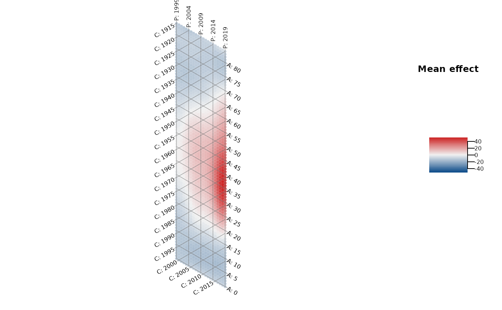

Plot the heatmap of an APC structure using a hexagon-based plot with adapted
axes. In this way, the one temporal dimension that is represented by the
diagonal structure is visually not underrepresented compared to the other two
dimensions on the x-axis and y-axis.
The function can be used in two ways: Either to plot the observed mean
structure of a metric variable, by specifying dat and the variable
y_var, or by specifying dat and the model object, to
plot some mean structure represented by an estimated two-dimensional tensor
product surface. The model must be estimated with gam or
bam.
Usage
plot_APChexamap(
dat,
y_var = NULL,
model = NULL,
apc_range = NULL,
y_var_logScale = FALSE,
obs_interval = 1,
iso_interval = 5,
color_vec = NULL,
color_range = NULL,
line_width = 0.5,
line_color = gray(0.5),
label_size = 0.5,
label_color = "black",
legend_title = NULL
)Arguments
- dat
Dataset with columns
periodandage. Ify_varis specified, the dataset must contain the respective column. Ifmodelis specified, the dataset must have been used for model estimation withgamorbam.- y_var
Optional character name of a metric variable to be plotted.
- model
Optional regression model estimated with
gamorbamto estimate a smoothed APC surface. Only used ify_varis not specified.- apc_range
Optional list with one or multiple elements with names
"age","period","cohort"to filter the data. Each element should contain a numeric vector of values for the respective variable that should be kept in the data. All other values are deleted.- y_var_logScale
Indicator if
y_varshould be log10 transformed. Only used ify_varis specified. Defaults to FALSE.- obs_interval
Numeric specifying the interval width based on which the data is spaced. Only used if
y_varis specified. Defaults to 1, i.e. observations each year.- iso_interval
Numeric specifying the interval width between the isolines along each axis. Defaults to 5.
- color_vec
Optional character vector of color names, specifying the color continuum.
- color_range
Optional numeric vector with two elements, specifying the ends of the color scale in the legend.
- line_width
Line width of the isolines. Defaults to 0.5.
- line_color
Character color name for the isolines. Defaults to gray.
- label_size
Size of the labels along the axes. Defaults to 0.5.
- label_color
Character color name for the labels along the axes.
- legend_title
Optional character title for the legend.
Details
See also plot_APCheatmap to plot a regular heatmap.
If the plot is created based on the model object and the model was
estimated with a log or logit link, the function automatically performs an
exponential transformation of the effect.
References
Jalal, H., Burke, D. (2020). Hexamaps for Age–Period–Cohort Data Visualization and Implementation in R. Epidemiology, 31 (6), e47-e49. doi: 10.1097/EDE.0000000000001236.
Author
Hawre Jalal hjalal@pitt.edu, Alexander Bauer alexander.bauer@stat.uni-muenchen.de
Examples
library(APCtools)
library(mgcv)
library(dplyr)
#>
#> Attaching package: ‘dplyr’
#> The following object is masked from ‘package:nlme’:
#>
#> collapse
#> The following objects are masked from ‘package:stats’:
#>
#> filter, lag
#> The following objects are masked from ‘package:base’:
#>
#> intersect, setdiff, setequal, union
data(drug_deaths)
# restrict to data where the mortality rate is available
drug_deaths <- drug_deaths %>% filter(!is.na(mortality_rate))
# hexamap of an observed structure
plot_APChexamap(dat = drug_deaths,
y_var = "mortality_rate",
color_range = c(0,40))
# hexamap of a smoothed structure
model <- gam(mortality_rate ~ te(age, period, bs = "ps", k = c(8,8)),
data = drug_deaths)
plot_APChexamap(dat = drug_deaths, model = model)
